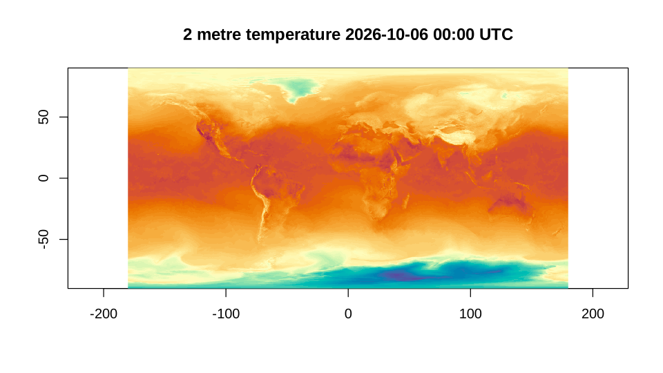

Icechunk is a transactional storage engine for Zarr. A Zarr store is a tree of JSON documents and chunk files; an Icechunk repository holds the same tree, but every change to it is a commit, and the repository keeps branches and tags that point at commits the way git does. A reader always sees one complete snapshot, never a half-finished write, and a tag or a commit is a permanent name for the data as it was.
GDAL reads Icechunk from version 3.14, with a driver that needs nothing beyond the Zarr driver and libzstd: no Rust and no Python. The background, and the same stores read from Python, terra, sf and gdalraster, are in the post Icechunk is coming. This article is the GDAL7 side of it.
Does this GDAL have the driver?
A driver is there or not depending on how GDAL was built, so ask the library rather than the version number:
library(GDAL7)
drivers <- gdal_drivers()
drivers[drivers$short_name %in% c("Zarr", "Icechunk"), ]
#> short_name long_name raster vector multidim create copy vsi extensions
#> 15 Zarr Zarr TRUE FALSE TRUE TRUE TRUE TRUE zarr
#> 16 Icechunk Icechunk TRUE FALSE TRUE FALSE FALSE TRUE <NA>Everything below needs the driver. Code that has to run anywhere can make the same test and step around it:
has_icechunk <- "Icechunk" %in% gdal_drivers()$short_nameTo Icechunk, GDAL is a multidimensional driver like Zarr or netCDF,
so a repository is opened with multidim = TRUE and read
with the functions in the Multidimensional
section of the reference.
A repository with some history
GDAL7 ships a small repository, built by
data-raw/make_icechunk_fixture.py with the icechunk Python
library (GDAL reads Icechunk but does not write it). It holds one array,
temperature, over 3 time steps on a 10 degree global grid,
and it has a history:
- on
main, a first commit, taggedv1, and a second commit that raises the second time step by 100; - a branch
experiment, which starts fromv1and lowers every value by 50.
The repository is a directory, and that is all GDAL needs to be given:
repo <- system.file("extdata/temperature.icechunk", package = "GDAL7")
ds <- gdal_open(repo, multidim = TRUE)
root <- get_root_group(ds)
root@mdarray_names
#> [1] "lat" "lon" "temperature" "time"
temperature <- open_mdarray(root, "temperature")
temperature@dimensions
#> name size type direction indexed
#> 1 time 3 TEMPORAL TRUE
#> 2 lat 18 HORIZONTAL_Y NORTH TRUE
#> 3 lon 36 HORIZONTAL_X EAST TRUE
temperature@block_size
#> time lat lon
#> 1 9 18
temperature@unit_type
#> [1] "degC"dimensions and block_size are in GDAL’s
order, slowest varying first. read_mdarray() gives
dim the other way round, the order ncdf4 and RNetCDF use,
which is also the order the values arrive in:
values <- read_mdarray(temperature)
dim(values)
#> lon lat time
#> 36 18 3
temperature@dimension_values$lat
#> [1] 85 75 65 55 45 35 25 15 5 -5 -15 -25 -35 -45 -55 -65 -75 -85Branches, tags and time travel
What GDAL opens by default is the head of main. The
branches and tags are listed by the driver’s own algorithms,
gdal driver icechunk list-branches and
list-tags on the command line. gdal_run() runs
them (it needs GDAL’s algorithm API, which Icechunk-capable builds have)
and gives back their JSON:
branches <- gdal_run("driver icechunk list-branches", list(input = repo))
jsonlite::fromJSON(branches)[, c("name", "commit_message")]
#> name commit_message
#> 1 experiment try an offset on a branch
#> 2 main correct the second time step
tags <- gdal_run("driver icechunk list-tags", list(input = repo))
jsonlite::fromJSON(tags)[, c("name", "commit_message")]
#> name commit_message
#> 1 v1 first version of temperatureAnother branch or a tag is chosen in the connection string: prefix
the path with ICECHUNK: and add ?branch= or
?tag=. A small helper keeps the reads short:
read_temperature <- function(dsn) {
ds <- gdal_open(dsn, multidim = TRUE)
on.exit(gdal_close(ds))
read_mdarray(open_mdarray(get_root_group(ds), "temperature"))
}
v1 <- read_temperature(paste0("ICECHUNK:", repo, "?tag=v1"))
experiment <- read_temperature(paste0("ICECHUNK:", repo, "?branch=experiment"))main differs from v1 in the second time
step only, and experiment differs from it everywhere:
apply(values - v1, 3, function(d) round(range(d), 4))
#> [,1] [,2] [,3]
#> [1,] 0 100 0
#> [2,] 0 100 0
apply(experiment - v1, 3, function(d) round(range(d), 4))
#> [,1] [,2] [,3]
#> [1,] -50 -50 -50
#> [2,] -50 -50 -50A tag never moves, and that makes it the right thing to build
anything long-lived on. as_altarr() (with the altarr
package installed) makes a lazy array that keeps the path and reopens it
in a new session; altarr asks that the source not change underneath it,
and an Icechunk tag is a promise that it will not:
lazy <- as_altarr(paste0("ICECHUNK:", repo, "?tag=v1"), array = "temperature")
dim(lazy)
#> [1] 36 18 3
mean(lazy[, , 2])
#> [1] 20.93571A branch is the opposite: the same string names whatever its head is when it is opened.
As an ordinary raster
A two-dimensional slice is a raster, and
as_classic_dataset() turns it into a
GDALDataset with a geotransform worked out from the
coordinate variables, so the rest of GDAL7 applies:
second <- as_classic_dataset(get_view(temperature, "[1,:,:]"))
second@geotransform
#> origin_x pixel_width row_rotation origin_y column_rotation
#> -180 10 0 90 0
#> pixel_height
#> -10
c(second@raster_xsize, second@raster_ysize)
#> [1] 36 18Underneath: /vsiicechunk/
The repository on disk is not a Zarr store. It has a
repo file, and directories of snapshots, manifests,
transactions and chunks whose names are identifiers rather than array
paths:
The driver works by presenting the Zarr store a snapshot describes as
a virtual file system, /vsiicechunk/, and handing that to
the Zarr driver. The same file system can be listed and read directly,
which is the low-level way to see what a repository holds. Braces mark
where the repository’s own path ends:
logical <- sprintf("/vsiicechunk/{%s}", repo)
vfs_list(logical)
#> [1] "zarr.json" "lat" "lon" "temperature" "time"
meta <- jsonlite::fromJSON(rawToChar(
vfs_read_file(paste0(logical, "/temperature/zarr.json"))
))
meta$shape
#> [1] 3 18 36
meta$codecs$name
#> [1] "bytes" "zstd"vfs_read_file() gives raw bytes, so the JSON is turned
into text first.
A forecast in the cloud
The repositories worth reading are on object storage. dynamical.org
publishes ECMWF’s AIFS forecasts as an Icechunk repository on S3, open
to anonymous reads. GDAL’s S3 settings are configuration options;
with_gdal_config() sets them for one block and puts them
back afterwards, while gdal_config() sets them for the
session, which is what is done here:
gdal_config("AWS_NO_SIGN_REQUEST", "YES")
gdal_config("AWS_REGION", "us-west-2")
aifs <- "/vsis3/dynamical-ecmwf-aifs-single/ecmwf-aifs-single-forecast/v0.1.0.icechunk"The repository has one branch, and its last commit says when it was updated:
jsonlite::fromJSON(gdal_run("driver icechunk list-branches", list(input = aifs)))
#> name commit_message timestamp
#> 1 main Update at 2026-10-06T06:14:01Z 2026-10-06T06:14:03.352ZOpening it reads the repository file, a snapshot and the array metadata, not the data:
ds <- gdal_open(aifs, multidim = TRUE)
root <- get_root_group(ds)
root@mdarray_names
#> [1] "init_time"
#> [2] "latitude"
#> [3] "lead_time"
#> [4] "longitude"
#> [5] "dew_point_temperature_2m"
#> [6] "downward_long_wave_radiation_flux_surface"
#> [7] "downward_short_wave_radiation_flux_surface"
#> [8] "expected_forecast_length"
#> [9] "geopotential_height_500hpa"
#> [10] "geopotential_height_850hpa"
#> [11] "geopotential_height_925hpa"
#> [12] "ingested_forecast_length"
#> [13] "precipitation_surface"
#> [14] "pressure_reduced_to_mean_sea_level"
#> [15] "pressure_surface"
#> [16] "spatial_ref"
#> [17] "temperature_2m"
#> [18] "temperature_850hpa"
#> [19] "temperature_925hpa"
#> [20] "total_cloud_cover_atmosphere"
#> [21] "valid_time"
#> [22] "wind_u_100m"
#> [23] "wind_u_10m"
#> [24] "wind_v_100m"
#> [25] "wind_v_10m"
t2m <- open_mdarray(root, "temperature_2m")
t2m@dimensions
#> name size type direction indexed
#> 1 init_time 3673 TRUE
#> 2 lead_time 61 TRUE
#> 3 latitude 721 HORIZONTAL_Y TRUE
#> 4 longitude 1440 HORIZONTAL_X TRUE
t2m@block_size
#> init_time lead_time latitude longitude
#> 1 61 241 240A chunk is one forecast run, all 61 lead times, on a 241 by 240 tile,
so a whole globe at one lead time touches 18 chunks.
init_time is in seconds since 1970:
init <- t2m@dimension_values$init_time
latest <- length(init)
run <- format(as.POSIXct(init[latest], origin = "1970-01-01", tz = "UTC"),
"%Y-%m-%d %H:%M UTC")
run
#> [1] "2026-10-06 00:00 UTC"advise_read() tells the Zarr driver what is coming, so
it fetches and decodes those chunks on GDAL’s threads at once, and the
read that follows is served from them:
start <- c(latest, 1, 1, 1)
count <- c(1, 1, 721, 1440)
advise_read(t2m, start = start, count = count)
analysis <- read_mdarray(t2m, start = start, count = count)
dim(analysis)
#> longitude latitude lead_time init_time
#> 1440 721 1 1
range(analysis)
#> [1] -66.00 39.75The values are [longitude, latitude], with latitude
running from north to south as it is stored, so image()
needs it reversed:
lon <- t2m@dimension_values$longitude
lat <- t2m@dimension_values$latitude
grid <- analysis[, , 1, 1]
image(lon, rev(lat), grid[, rev(seq_along(lat))], asp = 1,
col = hcl.colors(64, "Spectral", rev = TRUE),
xlab = "", ylab = "", useRaster = TRUE)
title(paste(t2m@attributes$long_name, run))
Codecs are a build question
Not every repository opens on every build. Earthmover’s ERA5 repository (the example in this gist) is in another region, still anonymous, and it opens and lists fine:
era5 <- "/vsis3/earthmover-icechunk-era5/icechunkV2"
with_gdal_config(c(AWS_REGION = "us-east-1"), {
print(vfs_list(sprintf("/vsiicechunk/{%s}/pressure/spatial", era5)))
era5_ds <- gdal_open(era5, multidim = TRUE)
t_era5 <- open_mdarray(get_root_group(era5_ds), "/pressure/spatial/t")
})
#> [1] "zarr.json" "latitude" "longitude" "lsm"
#> [5] "pressure_level" "pv" "q" "r"
#> [9] "sdor" "slor" "status" "t"
#> [13] "u" "v" "valid_time" "w"
#> [17] "z" "z_sfc"
#> Warning: GDAL: /pressure/spatial/t: Codec 'numcodecs.pcodec' is supported by
#> GDAL, but not in this particular build. Requires building GDAL with
#> -DGDAL_USE_PCODEC=ON and with a Rust toolchain available
is.null(t_era5)
#> [1] TRUEbut its arrays are compressed with pcodec, which GDAL supports only
when it is built with -DGDAL_USE_PCODEC=ON and a Rust
toolchain. The warning says so; the answer is a GDAL built with it, not
anything in R. The array’s codecs are in its zarr.json for
anyone who wants to check before opening:
with_gdal_config(c(AWS_REGION = "us-east-1"), {
meta <- vfs_read_file(sprintf("/vsiicechunk/{%s}/pressure/spatial/t/zarr.json", era5))
})
jsonlite::fromJSON(rawToChar(meta))$codecs$name
#> [1] "numcodecs.pcodec"Credentials, branches and other options
- A private bucket needs credentials instead of
AWS_NO_SIGN_REQUEST:AWS_ACCESS_KEY_IDandAWS_SECRET_ACCESS_KEY, or a profile withAWS_PROFILE, andAWS_S3_ENDPOINTfor storage that is not AWS. These are all GDAL configuration options, set withgdal_config()orwith_gdal_config(); GDAL also reads them from the environment. -
ICECHUNK:<path>?branch=<name>andICECHUNK:<path>?tag=<name>choose what is read. Adding&ignore-timestamp-etag=yesskips the check that a chunk file has not changed since it was referenced. - Virtual chunk references, which point into netCDF or HDF5 files
elsewhere rather than holding the bytes, are followed through GDAL’s own
file systems (
https://becomes/vsicurl/https://,s3://becomes/vsis3/), so the same configuration options apply to them.
The driver’s documentation is at https://gdal.org/en/latest/drivers/raster/icechunk.html.